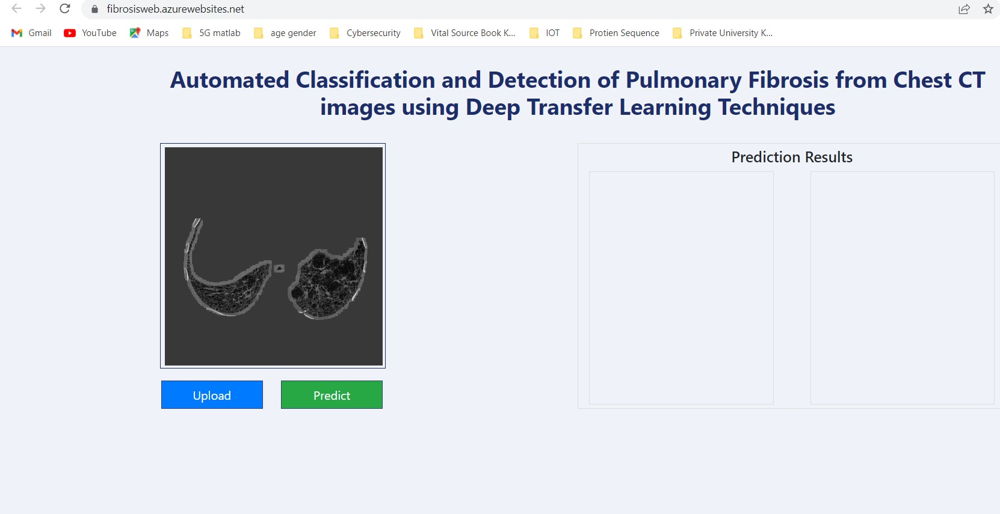
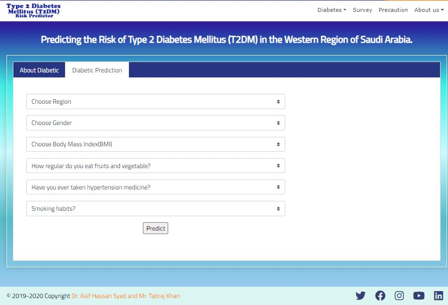
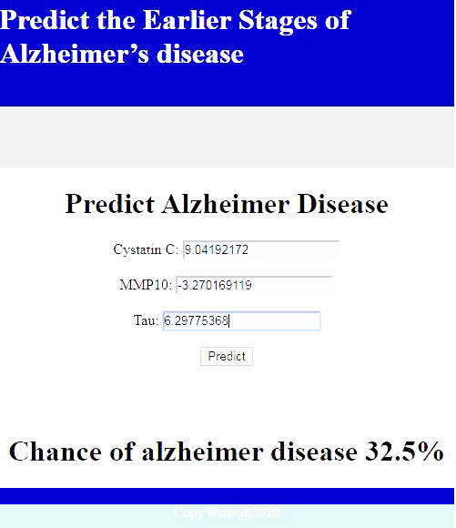
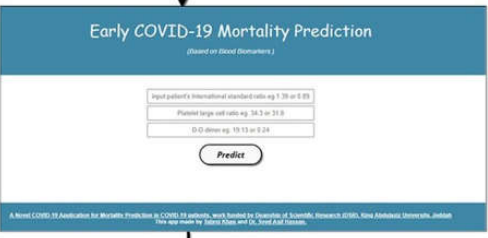
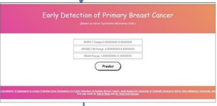

Home
Mentors
Students
Projects
Courses
Contact
FAQ
Projects About JAIRL
Projetcs
An E-Commerce based Web Portal to Support Customize Clothes for Obese People

Deep transfer learning techniques-based automated classification and detection of pulmonary fibrosis from chest CT images

Predicting the Risk of Type 2 Diabetes Mellitus (T2DM) in the Western Region of Saudi Arabia.

Web Application to Predict the Earlier Stages of Alzheimer’s disease

A Hybrid Feature Selection Approach to Screen a Novel Set of Blood Biomarkers for Early COVID-19 Mortality Prediction

A Hybrid Machine Learning Approach to Screen Optimal Predictors for the Classification of Primary Breast Tumors from Gene Expression Microarray Data.